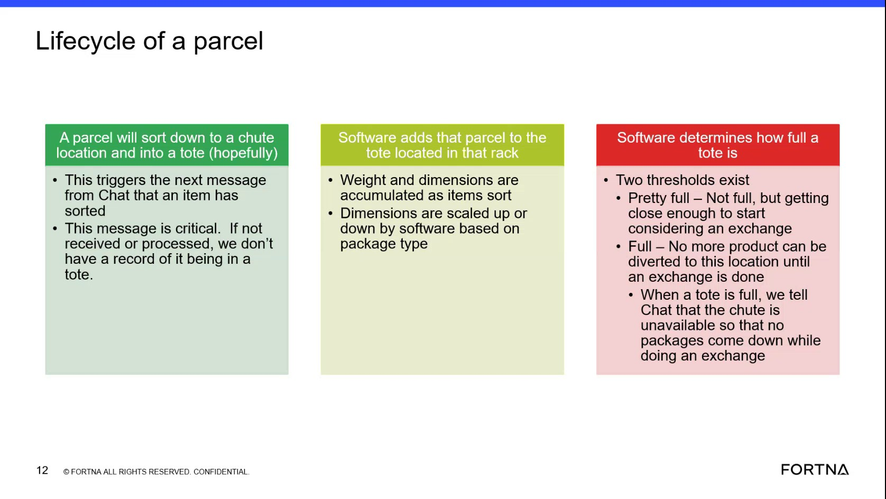

| Procedure ID | proc_interpret_tote_fullness_thresholds_and_pickup_priority_from_volumetric_data_v1 |
|---|---|
| Title | Interpret Tote Fullness Thresholds And Pickup Priority From Volumetric Data |
| Procedure Type | reference |
| Primary Role | L1_support |
| Support Safe | Yes |
| Validation Status | needs_sme_review |
| Merge Status | source_finalized |
Use the source-described tote fullness thresholds to interpret whether a tote is in a lower-priority pickup state, a higher-priority pickup state, or a full state that closes the chute. The source explains that software determines tote fullness from accumulated parcel dimension and weight data, with dimension scaling by package type such as boxes and bags.
Use when support or operations personnel need to interpret a tote's fullness status or relative pickup priority from the software-reported volumetric/fullness value using the threshold meanings described in the training source.
Responsible role: L1_support
Instruction:
Identify the tote whose fullness needs to be interpreted in the available software or data view.
Expected result:
A specific tote is selected or identified for review.
Stop or Escalate If:
Responsible role: L1_support
Instruction:
Check the tote fullness or volumetric value calculated by software from accumulated parcel dimension data. Note that the source says package type scaling differs for boxes and bags.
Expected result:
A current fullness or volumetric value is available for interpretation, with awareness that package type affects scaling.
Screens / Images:

Stop or Escalate If:
Responsible role: L1_support
Instruction:
Compare the observed fullness to the source-described threshold bands: over about 60% indicates pretty full and pickup should occur, over about 70% indicates higher pickup priority than lower percentages, and about 80% indicates full.
Expected result:
The tote is classified as pretty full, higher-priority for pickup, or full based on the source-described examples.
Screens / Images:
Stop or Escalate If:
Responsible role: L1_support
Instruction:
If the tote is at the full threshold, verify whether the chute is already closed as described by the source.
Expected result:
A tote interpreted as full is also confirmed against the source-described chute-closed behavior.
Screens / Images:
Stop or Escalate If:
Responsible role: L1_support
Instruction:
Record the interpreted tote state and relative pickup priority using only the source-described threshold meanings.
Expected result:
The tote is documented as pretty full, higher-priority for pickup, or full with chute closed, based on the source.
Stop or Escalate If: